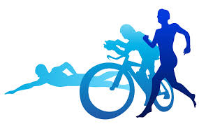
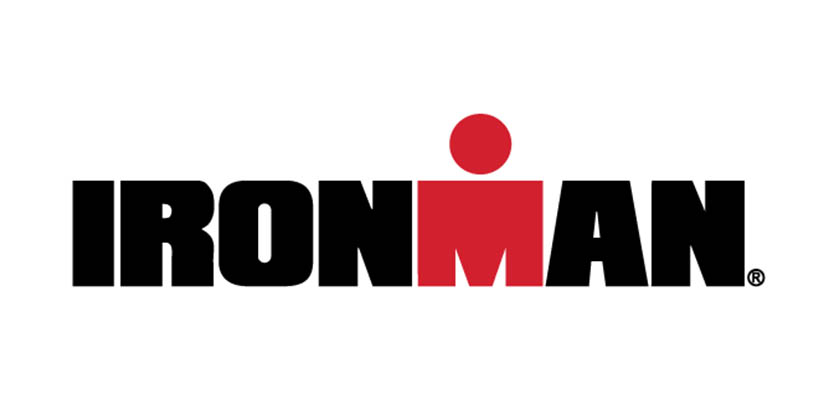

Triathlon is an edurance sport that combines three disciplines; swimming, cycling and running. It was first recorded in France in the early 1920s. Today there are four major distances; sprint, olympic, 70.3 (HIM), 140.6(IronMan).
The sprint can be classified as any distance less than Olympic. Generally they are made up of a 750 meter swim, an 8-12 mile bike and a 5k run.
The Oly consists of a 1500 meter swim, a 40km bike and a 10km run.
Also referred to as the Half IronMan, this race consists of a 1.2 mile swim, a 56 mile bike and a half-marathon or 13.1 mile run.
The big Kahuna, the Ironman distance is the longest of the standard distance races. It boasts a 2.4 mile swim, a 112 mile bike and a full 26.2 mile marathon.
